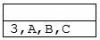
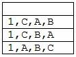

Ứng dụng ngăn xếp để loại bỏ đệ qui của chương trình
Nếu một chương trình con đệ qui p(x) được gọi từ chương trình chính ta nói chương trình con được thực hiện ở mức 1. Chương trình con này gọi chính nó, ta nói nó đi sâu vào mức 2... cho đến một mức k. Rõ ràng mức k phải thực hiện xong thì mức k-1 mới được thực hiện tiếp tục, hay ta còn nói là chương trình con quay về mức k-1.
Trong khi một chương trình con từ mức i đi vào mức i+1 thì các biến cục bộ của mức i và địa chỉ của mã lệnh còn dang dở phải được lưu trữ, địa chỉ này gọi là địa chỉ trở về. Khi từ mức i+1 quay về mức i các giá trị đó được sử dụng. Như vậy những biến cục bộ và địa chỉ lưu sau được dùng trước. Tính chất này gợi ý cho ta dùng một ngăn xếp để lưu giữ các giá trị cần thiết của mỗi lần gọi tới chương trình con. Mỗi khi lùi về một mức thì các giá trị này được lấy ra để tiếp tục thực hiện mức này. Ta có thể tóm tắt quá trình như sau:
Bước 1: Lưu các biến cục bộ và địa chỉ trở về.
Bước 2: Nếu thoả điều kiện ngừng đệ qui thì chuyển sang bước 3. Nếu không thì tính toán từng phần và quay lại bước 1 (đệ qui tiếp).
Bước 3: Khôi phục lại các biến cục bộ và địa chỉ trở về.
Ví dụ sau đây minh hoạ việc dùng ngăn xếp để loại bỏ chương trình đệ qui của bài toán "tháp Hà Nội" (tower of Hanoi).
Bài toán "tháp Hà Nội" được phát biểu như sau:
Có ba cọc A,B,C. Khởi đầu cọc A có một số đĩa xếp theo thứ tự nhỏ dần lên trên đỉnh. Bài toán đặt ra là phải chuyển toàn bộ chồng đĩa từ A sang B. Mỗi lần thực hiện chuyển một đĩa từ một cọc sang một cọc khác và không được đặt đĩa lớn nằm trên đĩa nhỏ.
Chương trình con đệ qui để giải bài toán tháp Hà Nội như sau:
void thapHN(int n, char a, char b,char c)
{if(n==1)
System.out.println(" " + a + " -> " + b);
else
{thapHN(n-1,a,c,b);
thapHN(1,a,b,c);
thapHN(n-1,c,b,a);
}
}
Quá trình thực hiện chương trình con được minh hoạ với ba đĩa (n=3) như sau:
Kết quả chương trình đệ quy |
Kết quả chương trình không đệ quy |
Để khử đệ qui ta phải nắm nguyên tắc sau đây:
Mỗi khi chương trình con đệ qui được gọi, ứng với việc đi từ mức i vào mức i+1, ta phải lưu trữ các biến cục bộ của chương trình con ở bước i vào ngăn xếp. Ta cũng phải lưu "địa chỉ mã lệnh" chưa được thi hành của chương trình con ở mức i. Tuy nhiên khi lập trình bằng ngôn ngữ cấp cao thì đây không phải là địa chỉ ô nhớ chứa mã lệnh của máy mà ta sẽ tổ chức sao cho khi mức i+1 hoàn thành thì lệnh tiếp theo sẽ được thực hiện là lệnh đầu tiên chưa được thi hành trong mức i.
Tập hợp các biến cục bộ của mỗi lần gọi chương trình con xem như là một mẩu tin hoạt động (activation record).
Mỗi lần thực hiện chương trình con tại mức i thì phải xóa mẩu tin lưu các biến cục bộ ở mức này trong ngăn xếp.
Như vậy nếu ta tổ chức ngăn xếp hợp lí thì các giá trị trong ngăn xếp chẳng những lưu trữ được các biến cục bộ cho mỗi lần gọi đệ qui, mà còn "điều khiển được thứ tự trở về" của các chương trình con. Ý tưởng này thể hiện trong cài đặt khử đệ qui cho bài toán tháp Hà Nội là: mẩu tin lưu trữ các biến cục bộ của chương trình con thực hiện sau thì được đưa vào ngăn xếp trước để nó được lấy ra dùng sau.
//Kiểu cấu trúc lưu trữ biến cục bộ
class Suite
{int n;char a,b,c;
Suite(int n1, char a1, char b1, char c1)
{n=n1;a=a1;b=b1;c=c1;
}
}
// Chương trình tháp Hà nội không đệ qui
void thapHN(Suite x)
{Suite g,h;
int n; char a,b,c;
MyStack t = new MyStack();
t.push(x);
while(!t.isEmpty())
{g=t.pop(); //Lay phan tu o dinh stack
...
}
}
Minh họa cho lời gọi thapHN(x) với 3 đĩa, tức là x.n=3.
Ngăn xếp khởi đầu:

Ngăn xếp sau lần lặp thứ nhất:
Ngăn xếp sau lần lặp thứ hai
Các lần lặp 3,4,5,6 thì chương trình con xử lý trường hợp chuyển 1 đĩa (ứng với trường hợp không gọi đệ qui), vì vậy không có mẩu tin nào được thêm vào ngăn xếp. Mỗi lần xử lý, phần tử đầu ngăn xếp bị xoá. Ta sẽ có ngăn xếp như sau.
Tiếp tục lặp bước 7 ta có ngăn xếp như sau:

Các lần lặp tiếp tục chỉ xử lý việc chuyển 1 đĩa (ứng với trường hợp không gọi đệ qui). Chương trình con in ra các phép chuyển và dẫn đến ngăn xếp rỗng.